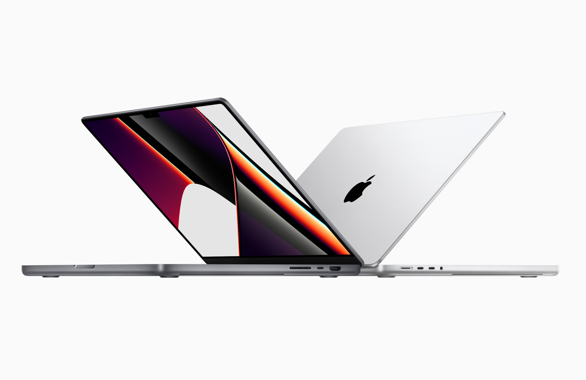

In today's digital era, computers have become an indispensable part of our daily lives and work. They offer unprecedented convenience and efficiency, from simple text processing to complex data analysis. Computers are not just the core of information technology; they have also become vital tools for communication, learning, and entertainment. As technology continuously evolves, so do the functionalities and forms of computers, bringing us more and more possibilities.
The evolution of computers over the years is a testament to human ingenuity and innovation. From the bulky mainframes of the early days to the sleek laptops and powerful smartphones of today, computers have undergone a remarkable transformation. This evolution has not only made them more accessible and user-friendly but has also expanded their applications into fields like artificial intelligence, virtual reality, and cloud computing. As a result, computers now play a pivotal role in shaping our future and driving technological advancements.
| Apple Mac book | Huawei Mate book |
|---|---|
| MacOS | Windows 11 Home/Windows 11 Pro |
| Minimalist, high-end aluminum finish | Light and thin, diverse design choices |